Biến 1 video quay mặt thành video dọc 9:16 có tiêu đề, ảnh minh họa pop-up, SFX, nhạc nền và phụ đề tự né mặt — chỉ bằng cách trò chuyện với Claude Code.
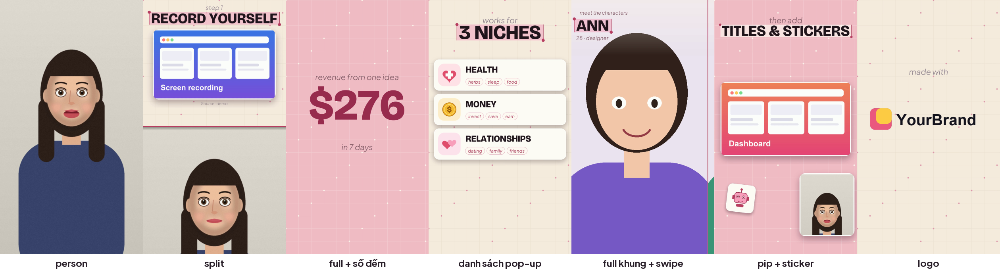
Hình trên là video thử do chính skill dựng (người nói và ảnh minh họa đều là hình vẽ tự sinh, không có người thật).
Bạn quay 1 video nói chuyện (dọc, 9:16), đưa thêm vài ảnh/clip minh họa. Claude Code dùng skill pop-edit để dựng giúp bạn, còn bạn chỉ cần duyệt kế hoạch và nói chỗ nào muốn sửa. Không cần biết lập trình, không cần phần mềm dựng.
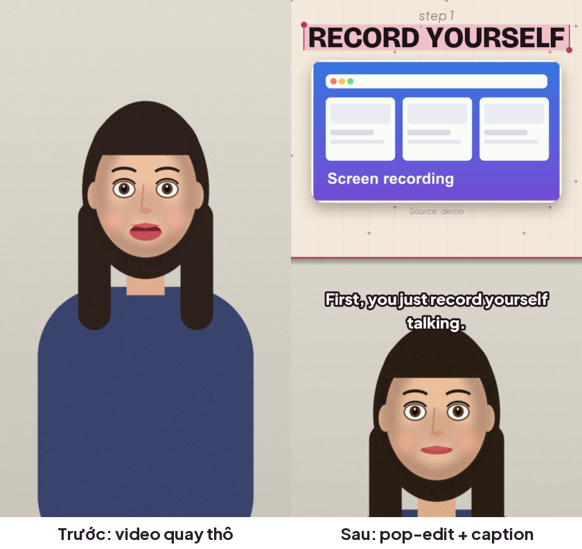
| Kiểu | Làm gì |
|---|---|
| Chữ tiêu đề đậm có ô chọn chữ | chữ in hoa đậm, dòng cuối được "bôi chọn" như đang chọn văn bản |
| Chia đôi màn hình | minh họa ở nửa trên, bạn ở nửa dưới |
| Thẻ ảnh/clip bật lên | có khung bo góc, bóng đổ, ghi nguồn nhỏ bên dưới |
| Danh sách pop-up theo lời nói | bạn nhắc tới mục nào, thẻ có icon + từ khoá bật lên đúng lúc đó |
| Số đếm lên | vd. $0 → $276 |
| Nhân vật full khung + swipe | mỗi người/sản phẩm chiếm cả màn hình, vuốt sang cái kế |
| Sticker | icon vẽ sẵn (robot, kịch bản, ngôi sao…) thay cho ảnh chụp giao diện |
| Người nói thu nhỏ ở góc (PiP) | khi clip minh họa cần cả khung |
| Logo, chuyển cảnh quét màu | logo bật vào; mỗi lần đổi cảnh có tấm màu quét ngang |
| SFX, nhạc nền | âm thanh tự tạo (không dính bản quyền); nhạc hạ xuống khi bạn nói |
| Làm đều tiếng nói | kéo các đoạn to/nhỏ về cùng một mức |
| Phụ đề tự né mặt | mỗi cụm chữ tự tìm chỗ không che mặt bạn |
| Đổi màu | có sẵn be-hồng, xanh, tím pastel; hoặc tự đặt màu |
Skill này làm việc với video dọc 1080×1920. Nó dựng bằng code nên 1 lần chạy cần vài phút; đổi lại, mọi chỗ đều sửa được và render lại y hệt.
| Thứ cần có | Chi tiết |
|---|---|
| Máy tính | Windows 10 (bản 1809 trở lên) hoặc macOS 13 trở lên; RAM 4 GB trở lên (khuyên 8 GB); trống khoảng 5 GB ổ đĩa. |
| Tài khoản Claude trả phí | Claude Code cần gói Pro, Max, Team hoặc Enterprise (gói miễn phí không dùng được). Không cần API key — đăng nhập bằng trình duyệt. |
| Python | Bản 3.10 trở lên (skill được thử trên 3.12). Tải ở python.org. |
| ffmpeg | Công cụ xử lý video, miễn phí. |
| Internet | Lần đầu để tải Claude Code, font, model nhận diện mặt và model nhận diện giọng nói. |
| Tư liệu | 1 video quay mặt (dọc), vài ảnh/clip minh họa, (tuỳ chọn) logo, nhạc nền được phép dùng. |
winget install Gyan.FFmpeg
python --version ffmpeg -versionCả hai in ra số phiên bản là xong.
brew install python ffmpeg
Chưa có Homebrew thì làm theo hướng dẫn ở brew.sh (1 dòng lệnh).
irm https://claude.ai/install.ps1 | iex
curl -fsSL https://claude.ai/install.sh | bash
Cài xong, mở terminal mới và kiểm tra, rồi vào thư mục làm việc và gõ claude:
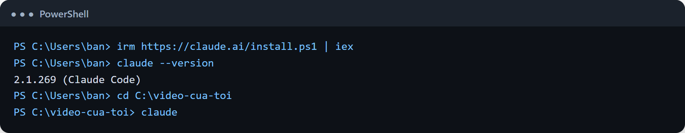
claude, nó mở trình duyệt để bạn đăng nhập tài khoản Claude. Đăng nhập xong quay lại terminal.Cách mở đúng: luôn mở Claude Code ngay trong thư mục chứa video của bạn (xem bước 5), vì Claude chỉ thấy file trong thư mục đó.
Có 2 cách, chọn 1.
Trong Claude Code, gõ lần lượt 2 dòng:
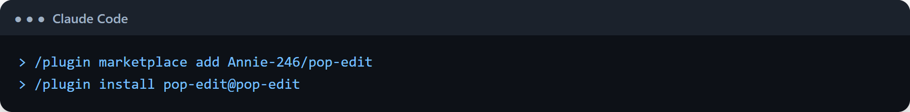
Lệnh đầu thêm "kho" skill; lệnh sau cài skill. Cài xong là dùng được ngay, không cần khởi động lại.
skills/pop-edit vào thư mục skill cá nhân của bạn:
| Windows | C:\Users\<tên bạn>\.claude\skills\pop-edit |
| macOS / Linux | ~/.claude/skills/pop-edit |
skills thì tự tạo. Cách này dùng được cho mọi dự án. Muốn chỉ dùng cho 1 dự án: chép vào .claude/skills/pop-edit ngay trong thư mục dự án./ và tìm tên pop-edit.Trước khi dùng video thật, chạy thử để chắc máy bạn đủ đồ nghề. Demo tự sinh người nói hoạt hình + tiếng đọc, không cần tư liệu gì.
Cách dễ nhất: nhờ Claude làm.
Claude sẽ chạy 3 việc: setup (kiểm tra + tải đồ), make_demo.py (sinh tư liệu), render (dựng). Nếu muốn tự gõ:
# Windows (đổi đường dẫn nếu bạn cài cách khác) cd %USERPROFILE%\.claude\skills\pop-edit pip install -r scripts\requirements.txt python scripts\popedit.py setup cd examples\demo python make_demo.py python ..\..\scripts\popedit.py render project.json
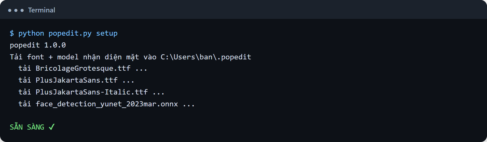
setup: tải font + model nhận diện mặt vào thư mục .popedit trong thư mục cá nhân (chỉ tải 1 lần)Nếu còn thiếu thứ gì, setup sẽ chỉ rõ và cho sẵn lệnh cài:
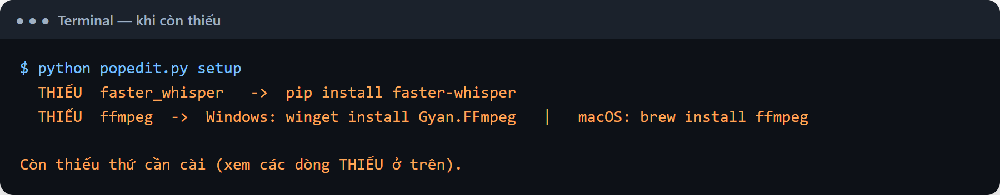
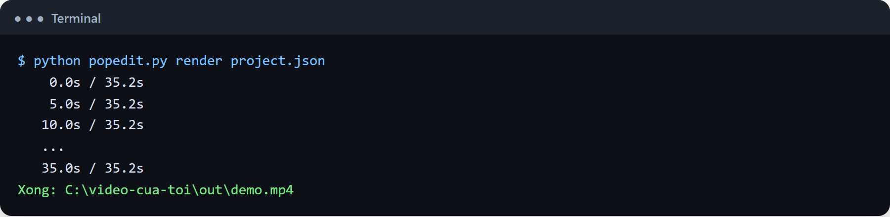
Mở file out/demo.mp4 xem thử. Thấy video có chữ, thẻ pop-up, người nói hoạt hình là máy bạn đã sẵn sàng.
man-hinh-1.png, nhan-vat-a.png).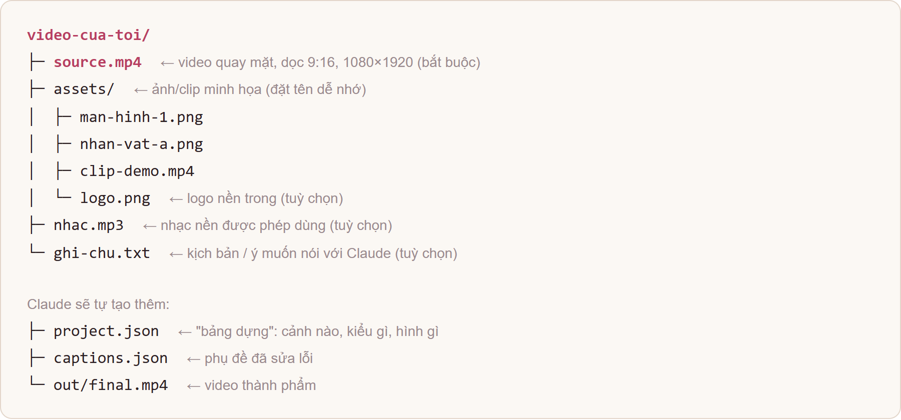
cd C:\video-cua-toi (đổi theo đường dẫn thật) rồi gõ claude. Trong VS Code thì chọn File → Open Folder rồi mở khung Claude Code.Nguyên tắc vàng: luôn bắt Claude đưa kế hoạch trước khi dựng. Việc duyệt kế hoạch (1 phút) rẻ hơn rất nhiều so với dựng xong mới sửa (vài chục phút).
source.mp4, ảnh minh họa nằm trong thư mục assets/, logo là assets/logo.png. Nội dung: [1–2 câu nói video về gì]. Chưa dựng vội, đưa mình bảng kế hoạch: giây nào → kiểu gì → hình/chữ gì. Chỗ nào dùng ảnh nào thì ghi rõ."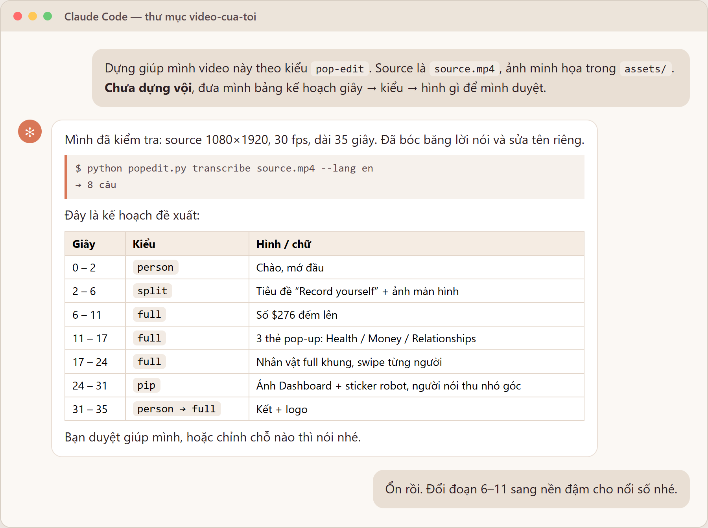
Hình khung chat trong tài liệu này là dựng lại để minh họa theo đúng nội dung các lệnh và kết quả thật của skill; cuộc trò chuyện thật của bạn sẽ tương tự nhưng lời văn của Claude có thể khác.
person (chỉ có bạn), split (chia đôi), full (đồ họa full màn hình), pip (bạn thu nhỏ ở góc).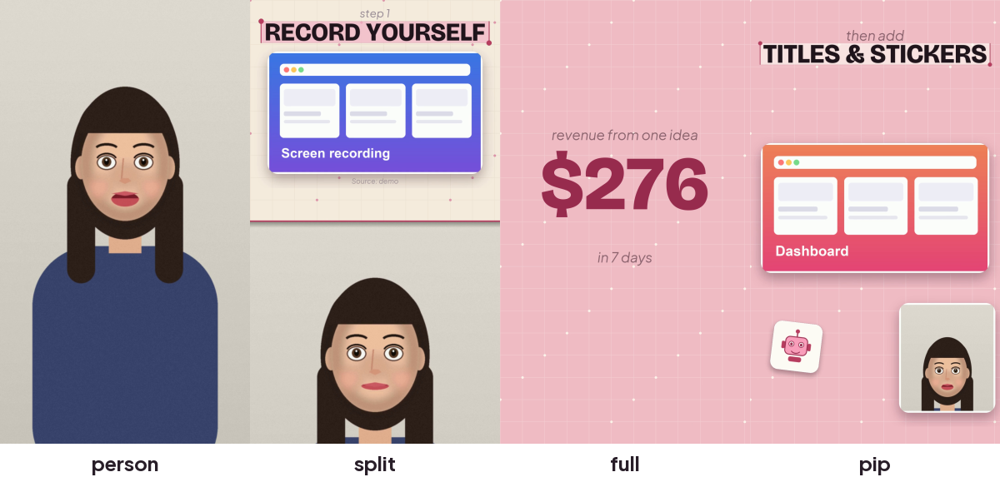
Sau khi bạn duyệt, Claude viết "bảng dựng" project.json, rồi xuất bảng ảnh thu nhỏ toàn video để xem trước. Nó phải mở ảnh ra xem thật trước khi báo bạn.
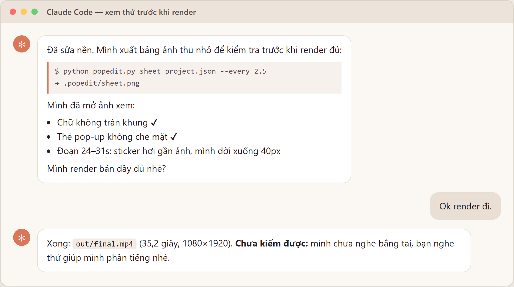
| Bạn muốn | Nói thế nào |
|---|---|
| Đổi kiểu 1 đoạn | "Đoạn 24–31s chuyển từ chia đôi sang full màn hình." |
| Đổi chữ | "Tiêu đề giây 8 đổi thành 'Quay chính bạn'." |
| Đổi ảnh | "Giây 11 dùng assets/dashboard.png, cắt bỏ phần thanh bên trái." |
| Pop-up lệch lời | "Thẻ 'Tài chính' phải hiện lúc mình nói chữ 'tài chính', hiện đang sớm quá." |
| Đổi màu | "Đổi sang tone xanh dương" (theme xanh) hoặc "tím pastel". |
| Thêm đoạn nghỉ | "Đoạn 17–24s nặng chữ quá, chèn 3 giây chỉ có mình nói." |
| Xem lại 1 đoạn chuyển động | "Render thử từ giây 20 đến 35 cho mình xem." |
Có sẵn 3 bảng màu: be-hong (mặc định), xanh, tim-pastel. Muốn màu riêng cứ nói "nền đậm màu xanh mint, chữ nhấn màu xanh lá" — Claude sẽ tự đặt từng màu trong theme.
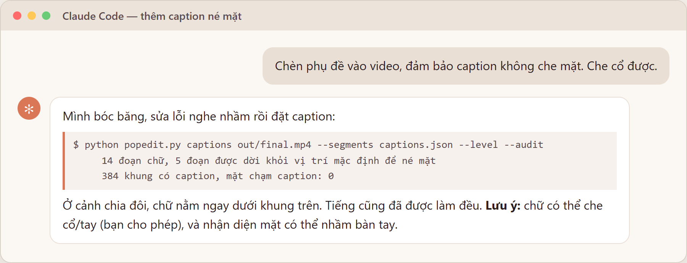
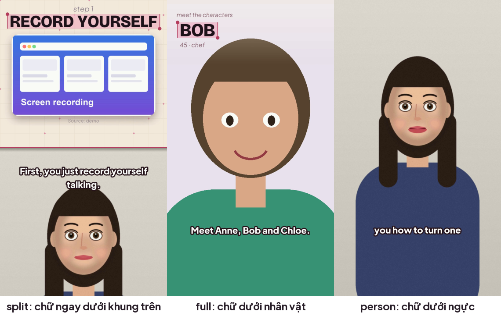
librosa, Claude sẽ hướng dẫn).| Hiện tượng | Cách xử lý |
|---|---|
python hoặc ffmpeg "không được nhận diện" | Đóng hẳn PowerShell rồi mở lại. Python: cài lại và nhớ tick "Add python.exe to PATH". |
setup in dòng THIẾU … | Làm theo đúng lệnh in kèm theo dòng đó (pip install …), rồi chạy lại setup. |
| Lần đầu bóc băng rất lâu | Lần đầu phải tải model nhận diện giọng nói (vài trăm MB đến khoảng 1–2 GB tuỳ model), và máy không có card đồ họa chạy khá chậm. Có thể chọn model nhẹ hơn: "dùng model small". |
| Thông báo nguồn không phải 1080×1920 | Nhờ Claude: "đổi source.mp4 sang 1080×1920". Nếu video gốc ngang (16:9) thì không hợp dạng dọc. |
| Đầu bạn bị cắt ở cảnh chia đôi | Nói: "ở cảnh chia đôi, đầu mình bị cắt, dời khung xuống/lên cho thấy đủ đầu" (chỉnh split_crop_y). |
| Chữ tràn khung / quá dài | Rút gọn chữ: "tiêu đề giây 8 quá dài, rút còn 3–4 từ". |
| Ảnh bị mờ / crop mất phần quan trọng | Đưa ảnh gốc lớn hơn, hoặc nói rõ vùng cần giữ. |
| Caption bị dời lên cao / lạ | Thường là nhận diện nhầm bàn tay. Nói Claude: "chạy kiểm tra caption" để xem khung nào, rồi báo giây cụ thể. |
| Tiếng nhạc/SFX không nghe thấy | Nói: "tăng nhạc nền / SFX lên", Claude sẽ đo lại sau khi sửa. |
| Đường dẫn có dấu tiếng Việt | Skill xử lý được. Nếu vẫn lỗi, đặt thư mục dự án ở đường dẫn không dấu (vd. C:\video). |
| Dựng quá lâu | Bình thường (4–6 phút cho mỗi phút video). Dùng "render thử từ giây X đến Y" để duyệt, chỉ render đủ 1 lần. |
| ☐ Đã xem video từ đầu đến cuối, nghe cả tiếng | ☐ Không chữ nào tràn khung hay che mặt |
| ☐ Tên riêng, số liệu trên màn hình khớp lời nói | ☐ Mỗi pop-up trúng lúc bạn nhắc tới |
| ☐ Ảnh/clip của người khác đều ghi nguồn | ☐ Nhạc nền được phép dùng (và đã ghi nguồn nếu cần) |
| ☐ Không lộ mật khẩu/key/email trên màn hình | ☐ Tiếng đều, không méo, nhạc không lấn lời |
source.mp4, ảnh: assets/. Nội dung: … Đưa mình bảng kế hoạch trước, chưa dựng."nhac.mp3 làm nền, nhỏ thôi, hạ khi mình nói."| Việc | Lệnh (đứng ở thư mục dự án; PE = đường dẫn tới scripts/popedit.py) |
|---|---|
| Kiểm tra máy + tải đồ | python PE setup |
| Tạo bảng dựng mẫu | python PE new . |
| Bóc băng | python PE transcribe source.mp4 --lang vi |
| Bảng ảnh thu nhỏ | python PE sheet project.json --every 2.5 |
| Xem vài khung | python PE stills project.json 10 20 30 |
| Dựng 1 đoạn | python PE render project.json --from 20 --to 35 |
| Dựng đầy đủ | python PE render project.json |
| Caption né mặt | python PE captions out/final.mp4 --segments captions.json --level --audit |
| Làm đều tiếng | python PE level out/final.mp4 |
project.json rút gọn{
"source": "source.mp4",
"out": "out/final.mp4",
"theme": "be-hong",
"audio": { "level": true, "sfx": true },
"scenes": [
{ "t": [2, 6], "layout": "split", "bg": "light", "elements": [
{ "type": "title", "lines": [["lead", "bước 1"], ["key", "Quay chính bạn"]] },
{ "type": "media", "file": "assets/man-hinh-1.png", "show": [2.2, 6], "tag": "Nguồn: ..." } ] },
{ "t": [6, 11], "layout": "full", "bg": "dark", "elements": [
{ "type": "counter", "value": 276, "prefix": "$", "at": 6.5 } ] }
]
}
Mọi mốc thời gian là giây của video. Khoảng trống giữa các cảnh tự thành cảnh chỉ có bạn. Danh sách đầy đủ các phần tử nằm trong references/elements.md.
pop-edit/ ├─ SKILL.md ← hướng dẫn Claude cách làm (Claude đọc cái này) ├─ scripts/popedit.py ← chương trình dựng ├─ references/ ← tài liệu chi tiết (phần tử, caption, âm thanh, đổi màu) └─ examples/demo/ ← bộ demo tự sinh
Giấy phép MIT — dùng, sửa, chia sẻ thoải mái. Font Bricolage Grotesque và Plus Jakarta Sans (giấy phép OFL) cùng model nhận diện mặt YuNet (OpenCV, MIT) được tải về khi chạy setup, không đi kèm trong repo.